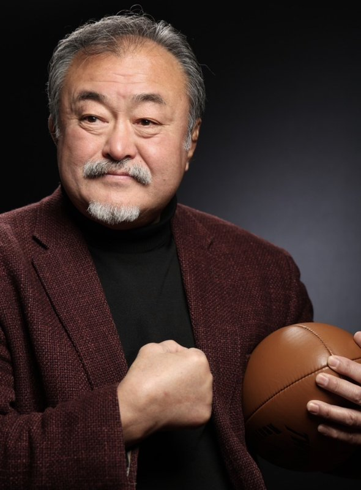

Donate or Support Us
Donate or Support Us


Toshiyuki Hayashi
Representative Director, Be HERO Co., Ltd.
Founder, NPO heroes
Former Captain, Japan National Rugby Team
(Played for Doshisha University, Kobe Steel, Oxford University, and others)
The message below is published in the original Japanese, in Mr. Hayashi’s own words.
「ONE FOR ALL, ALL FOR ONE」の精神で、
困難な壁を乗り越える力を
園部君が立ち上げ、そして今、新たな一歩として「特定非営利活動法人フライキプロジェクト」へと発展させる「災害ラガーボランティア活動」に、心からの敬意とエールを送ります。
東日本大震災を契機に生まれたこの活動は、まさにラグビーが持つ不屈の精神と仲間を思いやる心そのものです。どんなに苦しい局面であっても、仲間を信じ、ボールを後ろへ繋ぎながら前へ進み続ける。そのラグビーの哲学が、被災地や困難の中にある人々の心に希望の明かりを灯してきたことを、私は頼もしく拝見してきました。
私は、「ONE FOR ALL, ALL FOR ONE」の理念に息づくラグビー精神こそが、日本の未来を切り拓く力になると固く信じています。ラグビーを通じて私自身が体験させてもらった、胸が熱くなるような感動、そして挑戦する勇気。そうした湧き上がる感動を伝え、自らの人生の主人公（HERO）として輝く人々を一人でも多く育成したい――それが、私が掲げる「Be HERO」の想いです。
同じくラグビーを心から愛し、その精神を体現しながら社会のために活動を続ける園部君を、私はこれからも応援しています。
新たなステージへと飛躍するフライキプロジェクトの活動が、多くの人々の心に勇気を与え、あたたかい絆の輪を日本全国、そして未来へとさらに大きく広げていくことを心から祈念しております。
Born in 1960, he captained the Japan national rugby team for many years and is widely regarded as a legend of Japanese rugby. Today, guided by his “Be HERO” vision, he is committed to helping people realize their potential through the spirit of rugby, including through talent development, leadership training, and speaking engagements. He is also deeply devoted to social contribution through sport and to nurturing the next generation.